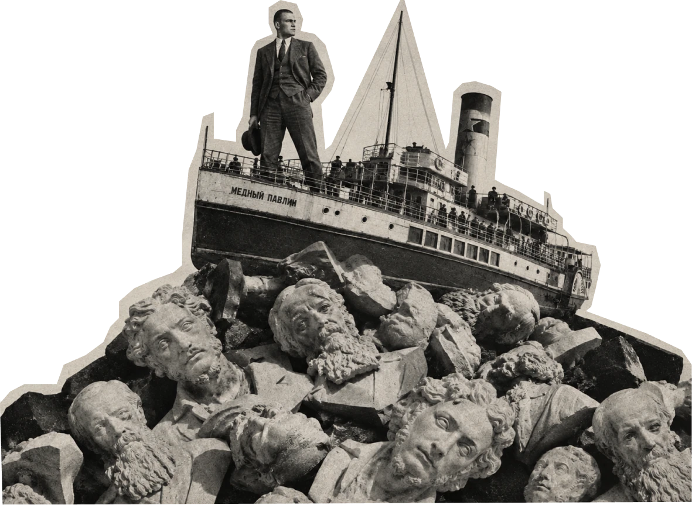
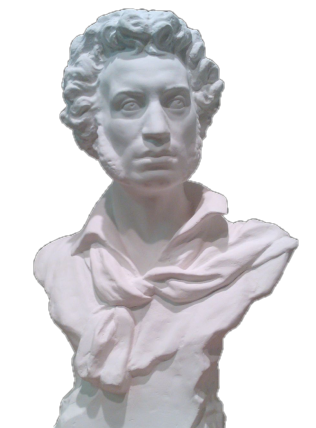

Вы любите авангард?
Рядом с вашей меткой те, кто реагировал похоже: одни писали в тот момент, другие вспоминали потом. Дальше путь у всех один. К метке вы вернётесь в конце.
На примере Малевича и Маяковского
изучим, что происходит с жестом
разрыва, когда новый порядок решает,
какое искусство ему нужно.
Начнём с жеста, который знают все.
Пощёчина общественному
вкусу
В конце 1912 года группа молодых поэтов
выпускает сборник с манифестом.
Он называется «Пощёчина общественному
вкусу». В нём предлагается сбросить Пушкина,
Достоевского и Толстого «с парохода
современности». Манифест подписали четверо:
Давид Бурлюк, Александр Крученых, Владимир
Маяковский и Велимир Хлебников.


Бросать вызов можно только тому, что все узнают: удар по неизвестному никто бы не заметил. Поэтому жест «против всех» ориентируется на то, что все уже считают ценным. Расстояние до большинства задано тем, где стоит большинство. Если бы большинство сдвинулось, изменилось бы и это расстояние.
«Чтобы сбросить Пушкина, манифесту
пришлось сначала назвать его по имени.»
Юбилейное
Двенадцать лет спустя, в 1924 году, Маяковский пишет
стихотворение «Юбилейное» к 125-летию
Пушкина. Теперь он обращается к поэту лично:
«Александр Сергеевич, разрешите
представиться. Маяковский».
Юбилейное
Пушкин здесь собеседник, а не груз на борту. Мумию
он не любит:
«Я люблю вас, но живого, а не мумию».
Юбилейное
Спорит он теперь с тем, что сделали с поэтом:
«навели хрестоматийный глянец».
«В 1912 году мишенью был классик
как образец вкуса. В 1924-м мишень
сместилась на глянец, которым
классика покрыли. Что изменилось:
Пушкин или то, против чего
направлен жест?»
«Юбилейное», журнал «ЛЕФ», № 2, 1924. О стихотворении · Тексты Маяковского в Викитеке
По логике модерна дальше
под вопросом оказывается сакральное:
если можно усомниться в Пушкине
и Толстом, следующим на очереди
будет Бог.
Малевича упрекали в том, что чёрный
квадрат отменяет всё светлое и доброе.
Так, например, писала Татьяна Толстая
в эссе о «Чёрном квадрате».

Бог не скинут
1922
«Бог – покой, покой – совершенство»
Но в 1922 году в Витебске Малевич издаёт брошюру
«Бог не скинут. Искусство, церковь, фабрика». Название
перекликается с «сбросить с парохода». Была ли эта
перекличка намеренной, мы не знаем.
Цитата по статье А. Малей. Саму брошюру мы пока не читали: текст на Monoskop.
супрематизм
от латинского supremus, «высший»
Так называя своё направление, Малевич считал его высшей ступенью, когда искусству больше не нужна предметность.
Интерпретация
Малевич продолжает апофатическую линию богословия: о высшем можно говорить, лишь отказываясь от образов. Эта линия идёт от Псевдо-Дионисия Ареопагита к мастеру Экхарту, Якобу Бёме и автору «Облака неведения». Читал ли он их, неизвестно, скорее всего, он пришёл к похожему интуитивно. Его презрение к вещественному миру напоминает мне ещё и платоническое, гностическое отвращение к плоти.
«Если искусство облачает церковь
и фабрику, это ещё жест против
порядка или уже служба ему?»
Что сделал сам и что решили другие
Вопрос про церковь и фабрику не решить по одним намерениям автора. Жест сначала делает человек, а потом его берут заказчик, власть, редакторы, музей.
Один и тот же жест может остаться против порядка, а может стать его украшением, и решает это не только автор.


Маяковский
Сделал сам
- 1912
Подписывает манифест «Пощёчина общественному вкусу».
- 1921
Выпускает поэму «150 000 000».
- 1924
«Юбилейное»: спорит с глянцем, которым покрыли Пушкина.
Решили другие
- 1921Ленин
Пишет о поэме «150 000 000»: «Как не стыдно голосовать за издание 150 000 000 Маяковского в 5000 экз.?»
- 1935Сталин
Лиля Брик жалуется, что поэта не издают. Сталин пишет Ежову: «Маяковский был и остаётся лучшим, талантливейшим поэтом нашей советской эпохи. Безразличие к его памяти и его произведениям — преступление.»
- 1935–1938Государство и школа
Площади и улицы получают его имя, выходят миллионные тиражи, стихи входят в школьные и вузовские программы. Музей открывается 15 октября 1938 года.
- 1950-еТеатры
Пьесы «Баня» и «Клоп» начинают широко ставить только теперь.
Какого Маяковского выбрали для учебника, а какой дожидался сцены до 1950-х?
«Клоп» (1928) и «Баня» (1929) — сатирические пьесы Маяковского.
Малевич
Сделал сам
- 1915
Показывает «Чёрный квадрат» на выставке «0,10». Картину вешают в «красном углу».
- 1919
Приезжает в Витебск, где работает до лета 1922 года.
- 1922
Выходит «Бог не скинут».
Решили другие
- Декабрь 1919Заказчик
Первый крупный заказ ученикам Малевича, группе УНОВИС: оформить годовщину Комитета по борьбе с безработицей.
- 1920Город
Уновисы оформляют город к праздникам, в том числе к Первомаю.
- 7 ноября 1920Власти
Отказываются от проектов УНОВИСа по оформлению города.
- 1927Власти
Отзывают Малевича из Берлина, его картины остаются в Германии.
- 1929Третьяковская галерея
Ему устраивают ретроспективу. Взамен оставшихся в Германии работ он пишет «сорок новых полотен».
Заказчик принимал одно и отказывался от другого. По какому признаку?
Ваш ход: нажмите на бюст
Следующий читатель
Он встречает обоих уже готовыми. Квадрат узнаётся, Маяковский входит в программу. Ему не нужно ничего сбрасывать, ему предлагают прочитать.
Ваш ход: вернитесь к началу
Вопрос тот же
Вы любите авангард? Поставьте метку ещё раз. Первая останется на шкале рядом с новой. Если ничего не изменилось, так и оставьте.
Вы не обязаны любить ни квадрат, ни Маяковского. Но теперь вы знаете, что место в учебнике и в музее кто-то назначил. Дальше решать вам: принять это место или спорить с ним.
Что остаётся от жеста, когда место ему уже назначено?
Прочтения «Юбилейного» и Малевича здесь мои, это не факты. Сверяйте со своим.